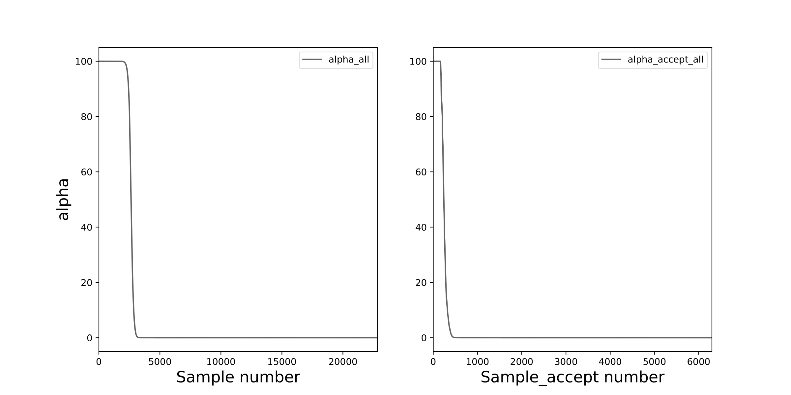
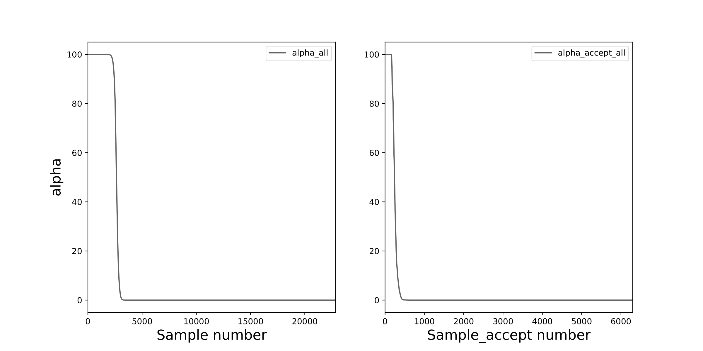
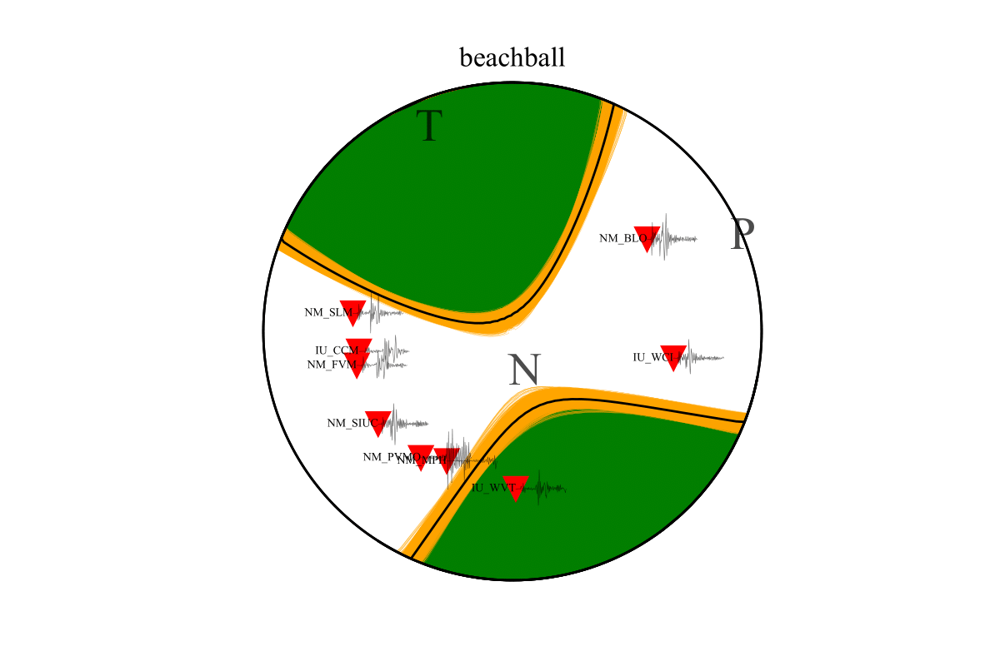
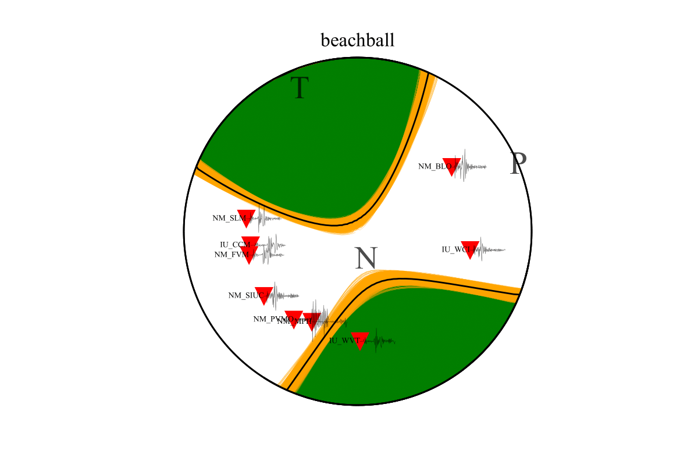

Tutorial¶
In this tutorial, we will show some of the key steps in MCMTpy for Focal Mechanism Inversion, including DC (double couple) and MT (moment tensor) inversion (not in now).
About ASDF format¶
The users who are interested in the details of ASDF format are referred to the following publication. And the pyasdf Github repository https://github.com/SeismicData/pyasdf.
Krischer, L., Smith, J., Lei, W., Lefebvre, M., Ruan, Y., de Andrade, E.S., Podhorszki, N., Bozdağ, E. and Tromp, J., 2016. An adaptable seismic data format. Geophysical Supplements to the Monthly Notices of the Royal Astronomical Society, 207(2), 1003-1011.
You can also find some useful examples about pyasdf in NoisePy.
About pyfk¶
The users who are interested in the details of pyfk are referred to the pyfk Github repository https://github.com/ziyixi/pyfk.
Short tutorial¶
MCMTpy stores all the parameter information in four JSON files: build_GFs.json, syn.json, sample.json and plot.json, and you can find those json-files in path ./MCMTpy-master/jsons/. For parameters choosing, please refer to Detailed tutorial. The steps to do inversion process are:
1. Calculate green function database:
$ MCMTpy build_GFs pyfk -c ./build_GFs.json
$ mpirun -n 4 MCMTpy build_GFs pyfk -c ./build_GFs.json # parallel
2. Synthesize the test data:
$ MCMTpy syn pyfk -c ./syn.json
3. Inversion of focal mechanism:
$ MCMTpy sample MH -c ./sample.json
$ mpirun -n 4 MCMTpy sample MH -c ./sample.json # parallel
4. Result visualization:
$ MCMTpy plot pyfk -c plot.json


 

{kind=link}
 

{kind=link}